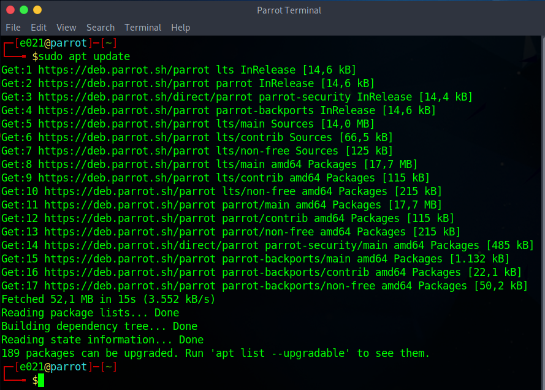
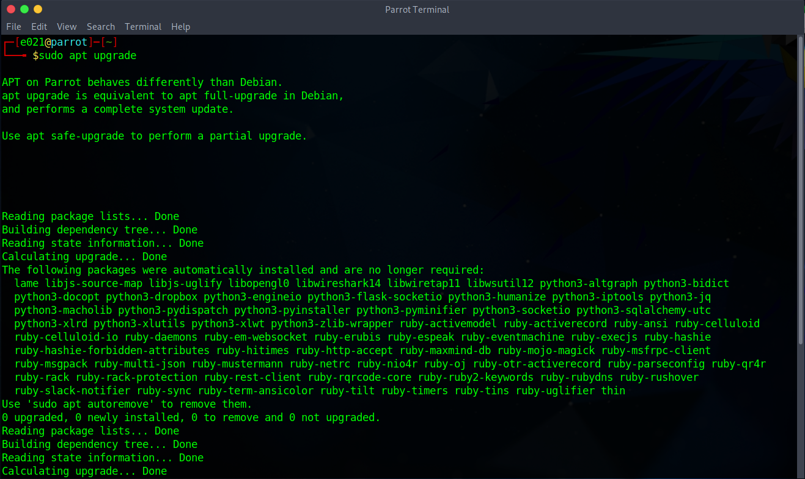
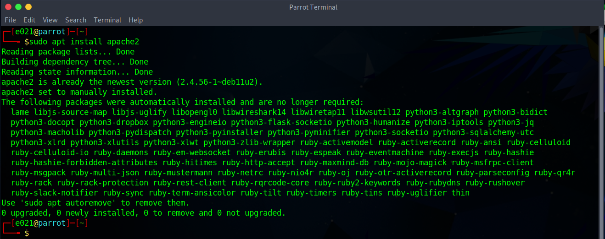
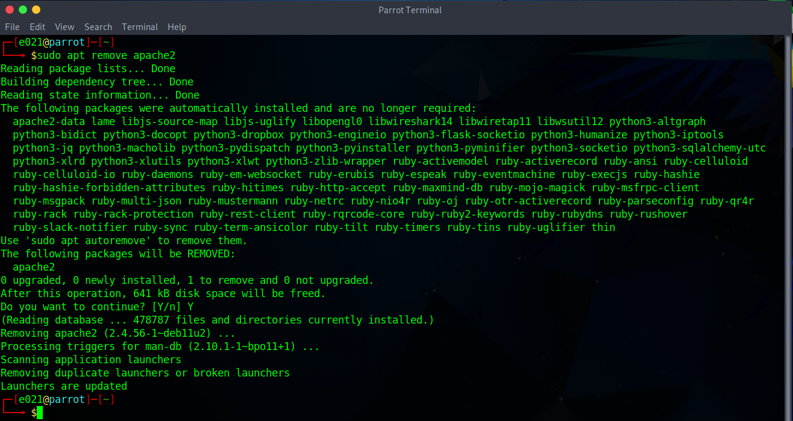
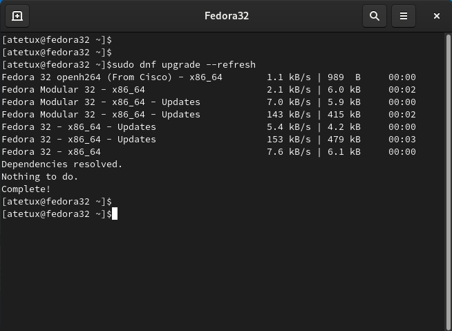
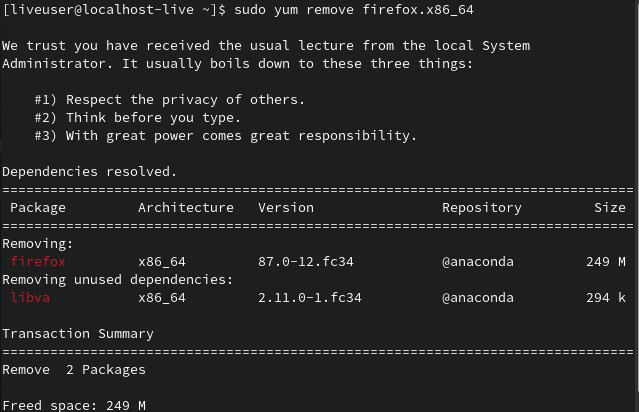

Gerenciamento de pacotes
Os gerenciadores de pacotes são ferramentas essenciais no Linux para instalar, atualizar e remover software de forma conveniente e segura. Existem diferentes gerenciadores de pacotes utilizados nas principais distribuições Linux, sendo os mais comuns o apt, utilizado pelo Debian e suas variantes, o yum, utilizado pelo CentOS e RHEL, e o dnf, utilizado pelo Fedora.
Gerenciadores de pacotes comuns
apt (Advanced Package Tool): O apt é utilizado pelo Debian, Ubuntu e suas variantes. Ele fornece uma interface de linha de comando fácil de usar para gerenciar pacotes. Alguns comandos úteis são:
sudo apt update: Atualiza a lista de pacotes disponíveis.
sudo apt upgrade: Atualiza todos os pacotes instalados para suas versões mais recentes.
sudo apt install nome_do_pacote: Instala um pacote específico.
sudo apt remove nome_do_pacote: Remove um pacote específico.
Segue a mesma lógica de comandos para os demais gerenciadores de pacotes como yum e dnf, basicamente o que muda na hora de digitar o comando é a primeira palavra depois de sudo, por exemplo:
sudo yum install apache2Instalação, atualização e remoção de software usando gerenciadores de pacotes
Usando esses gerenciadores de pacotes, você pode instalar, atualizar e remover software de maneira simples.
sudo apt install apache2

Para instalar o pacote "apache2" no Ubuntu ou Debian usando o apt, você executaria o comando acima:
sudo dnf upgrade
Para atualizar todos os pacotes instalados no Fedora usando o dnf, você executaria o comando acima:
sudo yum remove firefox.x86_64
E se você desejar remover o pacote "firefox.x86_64" no CentOS usando o yum, você usaria o comando acima:
Os gerenciadores de pacotes cuidam das dependências, garantindo que todas as bibliotecas necessárias sejam instaladas ou atualizadas automaticamente.